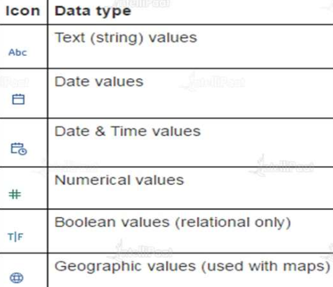

Basics
-
Data types
- 
- Using data interpreter, we can clean the data in Tableau. But what does it do exactly?
-
Field types

-
File types
-
No File Type Description 1 Workbook (.twb) Workbooks = Worksheets+dashboards+Stories 2 Bookmark(.tbm) Contains a single sheet 3 Packaged workbook(.twbx) An archive containing a workbook + data sources + files 4 Data extract(.hyper) Local copy of a subset or the entire data src to share and improve performance. 5 Data source(.tds) Shortcut to frequently used data sources containing information and modifications. 6 Packaged data source(.tdsx) Archive containing a data source file + any other related files. -
Relationship vs Join
No Relationships Joins 1 Defined between logical tables in the Relationship canvas (logical layer) Defined between physical tables in the Join/Union canvas (physical layer) 2 Don't require you to define a join type Require join planning and join type 3 Act like containers for tables that are joined or unioned Are merged into their logical table 4 Only data relevant to the viz is queried. Cardinality and referential integrity settings can be adjusted to optimize queries. Run as part of every query 5 Level of detail is at the aggregate for the viz Level of detail is at the row level for the single table 6 Join types are automatically formed by Tableau based on the context of analysis. Tableau determines the necessary joins based on the measures and dimensions in the viz. Join types are static and fixed in the data source, regardless of analytical context. Joins and unions are established prior to analysis and don’t change. 7 Rows are not duplicated Merged table data can result in duplication 8 Unmatched records are included in aggregates, unless explicitly excluded Unmatched records are omitted from the merged data 9 Create independent domains at multiple levels of detail Support scenarios that require a single table of data, such as extract filters and aggregation - When duplication or the filtering effects of a join might be desirable, use joins to merge tables together instead of relationships. Double-click a logical table to open the physical layer and add joined tables.
- A relationship describes how two independent tables relate to each other but does not merge the tables together. This avoids the data duplication and filtering issues that might occur in a join and can make working with your data easier.
- Differences between Data Blending and Data Joining The major differences between the two are: Data Blending allows a combination of data from different data sources to be linked. Whereas, Data Joining works only with data from one and the same source.Blends only support left joins, while relationships support full outer joins. Blends can be customized on a per-sheet basis.
- While both relationships and blends support analysis at different levels of detail, they have distinct differences. If you want to combine data from published data sources, blends are currently your only option. You might also choose to use blends when the fields used to join two tables are dependent on the worksheet.
Not sure what a measure is!! Click here!
- Constant sets are multi dimensional i.e, const sets can have more than one column in its data.
- These have to be created manually.
- Check this video to see how a constant set is created.
- Created constant sets are placed under dimensions (eventhough they have continuous data in it because after being placed in set, the values are countable).
How do I check the items in the constant set?
Note: Distinct features of constant set is that even if the underlying data changes, the data in constant set doesn't change.
To get the data of constant set refreshed or to get new updated data which is being overridden due to constant set creation, we can remove the data from the set.
- Uses some underlying condition logic to create the set.
- Unlike the constant set, computed set dynamically updates its members on auto-refresh, if there are any underlying changes in the data.
- It is one dimensional i.e, you can have only entries of only one column in the computed set.
- How to create it?
- Hover over to the dimension of choice
- Click the drop-down icon.
- Create set
- While creating set, set the condition like 'Top3' or 'bottom 3' or 'middle 5'
- Select any set.
- Click on drop down-> Create combined set.
- In the dialog box, select the other set you want to combine it with.
- CAN BE CREATED FOR BOTH ONE DIMENSIONAL AND MULTI DIMENSIONAL.
- Try creating two sets - top 2 by some condition and bottom 2 by same condition.Create combined set. Eg: Top and bottom 2 item-categories by sales.
How to get Top 6-10 rows of a dimension? Click here!
We cannot create sets for measures ( quantitative columns), instead we create bins.
Sets for dimensions(discrete values)
Bins for measures(continuous values)